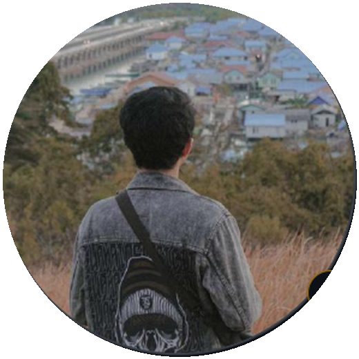

HELLO, I'M AHMAD ASYHARI ✦
Belajar hal baru.
Belajar hal baru.
Membangun hal nyata.
Saya Andros. Suka mengeksplorasi teknologi, membuat aplikasi, dan mengubah rasa penasaran menjadi sesuatu yang bisa digunakan.
SCROLL TO EXPLORE SELECTED WORK 01 / 03
A few things I've built.
Kumpulan proyek dan beberapa eksplorasi tampilan. Sembilan gambar di bawah masih menggunakan ilustrasi dummy.
Semua visual proyek merupakan mockup ilustratif, bukan screenshot produk asli. Nama repositori ditautkan ke GitHub.
MORE ABOUT ME 02 / 03
Tidak harus tahu segalanya untuk mulai membuat.
Saya Ahmad Asyhari, dikenal sebagai andros38 di internet. Tertarik dengan pengembangan software, eksperimen teknologi, dan proses memahami cara kerja sebuah sistem.
Kenali karya saya di GitHub
AHMAD ASYHARI
Developer by curiosity.
Developer by curiosity.
“
Belajar teknologi itu menyenangkan.
Punya ide menarik?
Mari terhubung.
Senang bertukar ide, cerita tentang teknologi, atau menjelajahi proyek yang sedang dikembangkan.